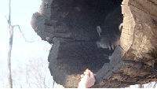

Lu Dong (董璐)Ph.D. Student
Department of Computer Science and Engineering |
 |
About Me
I am a Ph.D. student (2021-Present) at the Department of Computer Science and Engineering (CSE) of University at Buffalo-The State University of New York (UB) , working with Prof. Ifeoma Nwogu at the Human Behavior Modeling Lab. Prior to Ph.D. study, I received my Master's degree at the school of Computer Science and Technology, Xi'an Jiaotong University (XJTU) , China, where I was advised by Prof. Xinyu Yang at the YLab . I also obtained two Bachelor's degrees respectively in Comouter Science and Technology and in Electrical Engineering and Automation, Northeast Electric Power University (NEEPU), China.
I work on Machine Learning (ML) and Computer Vision (CV). My research interests center around Human Pose Estimation, Language-driven Motion, Physics Simulation, Sign Language Translation and Generation, and Video Understanding, primarily in developing CV, NLP, reinforcement learning, statistic machine learning, and mathematical modeling to study different human dynamics and improve behavior understanding. My early works are related to Speech Sentiment Analysis and Machine Learning based Music Analysis. Feel free to reach out to me if you are interested in collaboration. I am also activaly looking for research intern postions.
News [ ]
]
|
Selected Publications
Under Review
To address the limitations of action genertion on close-set, we propose AtomVAE for zero-shot text-to-motion synthesis, aimming to generate novel Unseen categories of actions.
Ongoing
To faciliate mutual understanding between the Sign Language community and General public or even robotics, we propose SignDict for generation from text to video clips.
Previous
Selected Project Demo
Experience
- Research Internship OPPO US Research Center, Palo Alto, CA, On-Site, May 2022- Aug 2022.
- Research Assitant University at Buaffalo SUNY (UB), Aug 2021- Now.
- Research Assitant Rochester Institute of Technology(RIT), Aug 2020- May 2021.
- Senior Data Analyst Shaanxi Haina Electronic Technology Co.,LT, Sep 2016- Apr 2020.
- Research Assitant XI'An Jiaotong University (XJTU), Aug 2013- May 2016.
Selected Awards & Honors
Awards
- Outstanding Leadership Award, Shaanxi Haina Electronic Technology Co.,LT. 2018
- National Graduate Academic Scholarship , Xi'an Jiaotong University (XJTU), 2013-2016.
- Silver Metal, Universiade Women's Hurdle，Xi'an Jiaotong University (XJTU), 2014.
- National Encouragement Scholarship, Northeast Electric Power University (NEEPU), 2010.(top 5%)
- The Academic Scholarship , Northeast Electric Power University (NEEPU), 2010. (top 10%)
- Champion & MVP , College Women's Basketball of NEEPU, 2010.
Honors
- Excellent Postgraduate Student , XI'an Jiaotong University (XJTU), 2014 & 2015. (top 10%)
- Excellent Student Cadre , Northeast Electric Power University (NEEPU), 2010.
- Excellent Undergraduate Student ,Northeast Electric Power University (NEEPU).
Academic Services
Competition
- 2022.11.06 I was invited as a Judge for 2022 UB Hacking Competition.
Talks
- 2022.10.18: Delivering a talk, introducing Human Pose Estimation and Ph.D Life Guidance in the course CSE-501, Fall2022.
Selected Photos
|
Last Updated on Nov, 2022  |